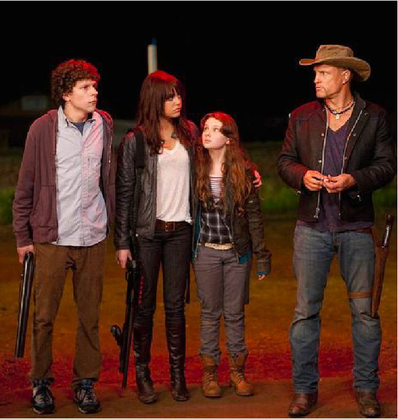

Ocean's 8
Nice comedy-crime tape about the sophisticated theft of a diamond necklace. Debbie Ocean (Sandra Bullock), Danny Ocean's sister, is released on parole from prison. For five years she was not taught anything, and she immediately begins to prepare for a major robbery. The target is a $ 150 million diamond necklace that will appear at the MET Gala at the famed Metropolitan Museum of Art. After meeting with Lou Miller (Cate Blanchett), her longtime friend, Debbie begins to gather the best specialists in their field and prepare a daring plan. Already the beginning of the film shows that what we have before us is nothing more than a soft restart of the original film "Ocean's Eleven"

Fantastic Mr. Fox
Puppet animation by Wes Anderson, based on the book of the same name by Roald Dahl. "Fantastic Mr. Fox" tells the story of a fox (George Clooney), who, after learning that he will soon become a father, stops stealing chickens and becomes a journalist. However, a quiet life is not for him, so after a long pause, he gives free rein to instincts and decides to turn the last theft. Its victims are three vicious farmers who live nearby - "one fat, one short, one thin", as the children sing about them. But they decide to take revenge on the theft, and arrange a hunt that threatens almost the entire forest.

Zombielaand
American comedy horror film directed by Ruben Fleischer, which tells us about a young guy named Columbus, who is trying to survive by traveling to the United States of America, which has long been inhabited by the living dead. On the way, he meets the eccentric Tallahassee, who has a car and an obsession with Twinkie cakes. Soon the friends meet the two sisters, who trick them and still their car to get to the Wild Adventure amusement park - but the girls' plan is thwarted, and they are forced to team up with Columbus and Tallahassee. This is how the fun journey of a motley company begins, whose members are ready to interrupt each other even before the zombies do.